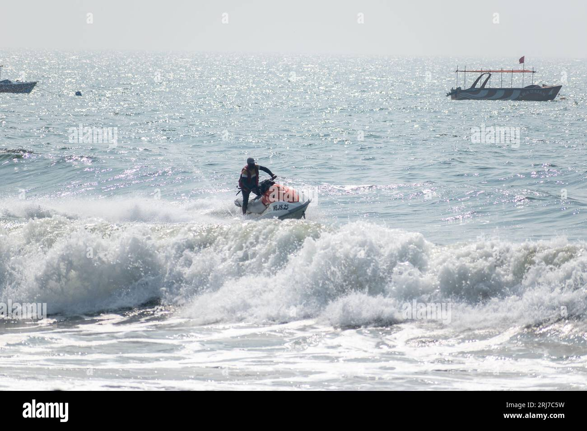

🇮🇳 Jet Skiing in India

India Open Jet Ski Championship (Goa)
Format: Individual & relay jet ski racing
Frequency: Annual (varies)
Organizer: Private organizers with support from Goa Tourism
Description: India's most recognized jet ski racing event, featuring riders from various states and South Asian regions.

Andhra Pradesh Water Sports Festival
Format: Demonstration and racing events
Frequency: Occasionally as part of tourism promotions
Organizer: Andhra Pradesh Tourism + local sports associations
Description: Jet skiing is featured in multi-sport water events aimed at promoting local tourism and recreational water sports in coastal areas.